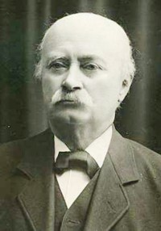
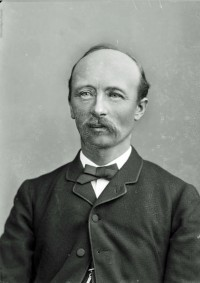

| Far | Anders Olsen Bangsund (f. 1746, d. 21 juni 1832) |
| Mor | Karen Iversdatter Berre (f. omtrent 1750) |
| Sist redigert | 10 mars 2005 00:00:00 |
| Slektskap | 4-menning 5 ganger forskjøvet til Håkon Wahl |
| Sist redigert | 10 mars 2005 00:00:00 |
| Far | Ole Gautsen Rygh (f. 2 februar 1754, d. 9 mai 1830) |
| Mor | Dåreth Olsdatter Skjelbred (f. 1764, d. september 1814) |
| Sist redigert | 11 mars 2005 00:00:00 |
| Slektskap | 4-menning 5 ganger forskjøvet til Håkon Wahl |
| Far | Ole Gautsen Rygh (f. 2 februar 1754, d. 9 mai 1830) |
| Mor | Dåreth Olsdatter Skjelbred (f. 1764, d. september 1814) |
| Datter | Dorothea Birgitte Gautsdatter Rygh (f. 20 juli 1836, d. 19 november 1909) |
| Datter | Ovidia Gautsdatter Rygh (f. 9 juli 1839) |
| Sist redigert | 16 juli 2022 19:57:29 |
| Slektskap | 4-menning 5 ganger forskjøvet til Håkon Wahl |
| Far | Nils Olsen (f. før 1782) |
| Datter | Dorothea Birgitte Gautsdatter Rygh (f. 20 juli 1836, d. 19 november 1909) |
| Datter | Ovidia Gautsdatter Rygh (f. 9 juli 1839) |
| Sist redigert | 16 juli 2022 19:56:53 |
| Far | Gaut Olsen Rygh (f. 1798, d. september 1842) |
| Mor | Susanna Christianne Nilsdatter (f. omtrent 1800, d. september 1842) |
| Sist redigert | 13 juli 2022 21:43:24 |
| Slektskap | 5-menning 4 ganger forskjøvet til Håkon Wahl |
| Far | Gaut Olsen Rygh (f. 1798, d. september 1842) |
| Mor | Susanna Christianne Nilsdatter (f. omtrent 1800, d. september 1842) |
| Sist redigert | 10 april 2009 00:00:00 |
| Slektskap | 5-menning 4 ganger forskjøvet til Håkon Wahl |
| Sist redigert | 11 mars 2005 00:00:00 |
| Datter | Susanna Christianne Nilsdatter+ (f. omtrent 1800, d. september 1842) |
| Sist redigert | 11 mars 2005 00:00:00 |
| Sønn | John Wold+ (f. 24 oktober 1836, d. 15 januar 1908) |
| Sist redigert | 3 september 2025 22:17:10 |
| Far | Ole Gautsen Rygh (f. 2 februar 1754, d. 9 mai 1830) |
| Mor | Dåreth Olsdatter Skjelbred (f. 1764, d. september 1814) |
| Sønn | Oluf Rygh (f. 5 september 1833, d. 19 august 1899) |
| Datter | Didrikke Rygh+ (f. 14 mars 1836, d. 8 september 1896) |
| Sønn | Karl Ditlev Rygh (f. 7 juni 1839, d. 10 mars 1915) |
| Sønn | Evald Rygh+ (f. 26 mai 1842, d. 9 mai 1913) |
| Datter | Petra Rygh+ (f. 7 august 1845, d. 28 november 1918) |
| Datter | Gusta Susanne Rygh (f. 14 juli 1850, d. 8 april 1928) |
Faren kom fra gården Rygg i samme bygd, derav slektsnavnet.
Det sies at Peder allerede som liten gutt leste mye i bøker som han brakte med seg når han gjetet buskapen. Tidlig i 1811 ble han satt bort til presten L. Jenssen på Grande i Overhalla, som underviste ham frem til han i 1812 fikk et nytt prestekall i Kautokeino. Rygh bodde hjemme frem til konfirmasjonen i 1815, da han ble visergutt og kontorist hos fogd Jens Severin Bærøe Hegge i Namdalen, med bolig på Veglo i Overhalla. Rygh fulgte med da Hegge ble fogd på Inderøy.
Foged Hegge gir ham følgende attest:
"Foreviseren herav Peder Strand Rygh har i 8 år fra hans 16de til hans 24de år tjent på mitt contor, og i denne tid vist en streng og moralsk opførsel, samt en ualmindelig beqvemhet til med flid, konduite, rettskaffenhet og duelighet at uføre alle forefaldende forretninger, hvilket han ved flere gange i mitt forfald som constituert på tingreiser og andre justisforretninger har havt leilighet at for dagen legge til så vel sine foresattes som undergivnes tilfredshet. Sandheten herav er mig en behaglig plikt herved at bevitne."
Av denne attest framgår nokså tydelig at Rygh må ha vært "ualminnelig bekvem" siden han endog kunde konstitueres som foged før han etter datidens lovgivning var personlig fullmyndig.
Av Evald Ryghs opptegnelser om faren hitsettes videre etter Værdalsboken:
"Inntektene av lensmannsbestillingen burde vel i hine hårde dager ha vært nokså gode; men far gjorde seg ikke stillingen så innbringende som andre ville ha gjort. Han kviet seg for å ta sportler av fattige debitorer, og istedetfor å pante nøyet han seg meget ofte med å varsle og kreve, og mangen en gang la han visstnok selv ut skattene for fattige stympere og fikk dem aldri refundert. (sml sorenskriver Klykken A M). Med inkassasjoner for private befattet han seg aldri så lenge jeg kan huske. Dem overdrog han til sin nabo og venn, Martinus Moe på Haugslien ("han Martinus" som almuen kalte ham), og grunnen var visstnok den at han etter sitt naturell fant det pinlig å gå strengt fram mot uefterrettelige debitorer. Den vesentlige inntekt som lensmann antar jeg far hadde av skyss- og diettgodtgjørelse for offentlige forretninger, bl a veibefaringer, men etterhånden ble disse inntekter sterkt redusert ved senere lover. Efterhånden som der måtte kostes på oss barn, steg naturligvis utgiftene betydelig, og jeg har det inntrykk at om man enn egentlig ikke led under næringssorger, så levet man nokså trangt, så det var nødvendig å iaktta stor sparsomhet og forsiktighet. Jeg husker der var megen ventilasjon om man hadde råd til å sette alle oss tre gutter til studeringer hvortil naturligvis den eldstes utmerkede fremgang jo oppmuntret sterkt. Far var i det hele tatt av temperament nokså bekymringsfull, især i de senere år, og så visstnok mere pessimistisk på sin økonomi enn det egentlig var nødvendig. Jeg tenker at mor ofte var den som stivet ham opp. I et hvert fall holdtes økonomien alltid i orden om enn under endel bekymringer og savn, idet man satte tæring etter næring, og ved mors død i 1878 var det vel et snes tusen kroner i behold i boet efterat gården var realisert. - Far gav seg ikke meget av med oss barn. Han overlot oppdragelsen til mor, og vi kom aldri i noget intimt forhold til ham. Først da vi blev voksne, innlot han seg mere med oss. Hans tid opptokes av hans lensmannsforretninger og av gårdsbruket. Kontorarbeidet var visstnok ikke særdeles tidsslukende, og far tok det også lettvindt i den henseende. derimot var det mange reiser, så som til stevninger og forkyndelser, til veibefaringer, til auksjoner og registreringsforretninger m v. Far undgikk så meget som mulig å bruke hest. Han foretrakk å gå, og han kunne ofte være borte hele dagen gående. Hans stadige ledsager var Martinus Moe som fungerte som stevne- og auksjonsvitne og som tillike var hans vikar under stortingssesjonene. At politiforretningene voldte far synderlig bryderi, kan jeg ikke minnes; forholdene i bygden var meget fredelige, og arrestasjoner for uordener eller forbrytelser forekom så godt som ikke. Derimot kunde der naturligvis av og til forekomme etterforskninger og politiundersøkelser, og transportfanger kom av og til fra andre bygder. En av de politiforretninger som falt i fars lodd og som var ham meget ubehagelig, var å skjære ned selvmordere som hadde hengt seg. Det var en gjengs oppfatning som visstnok savnet lovhjemmel, at hengte ikke måtte røres før lensmannen var kommet tilstede. - Far nød megen anseelse i sin bygd som en rettlinjet karakter og en human bestillingsmann. Han var meget hjelpsom og var meget søkt som rådgiver av almuen, hvad han selvfølgelig ikke tok noen godtgjørelse for, ti hans uegennyttighet var stor. Han var bygdens juridiske konsulent, og hans bistand påkaltes i mange slags anliggender. Han fikk ofte som takk for utviste tjenester, eller som uttrykk for befolkningens sympati små foræringer fra bygdens folk, såsom fersk laks, ryper o l, og stod i det hele tatt på en megen god fot med befolkningen, skjønt han aldri la an på å gjøre seg populær. Det lå fjernt fra hans natur å stikke seg frem. En sak som i adskillelige år voldte ham bryderi og ubehageligheter, var de idelige klager over tyveri fra Statens almenninger, og hvori også Nicolai Jenssen blev innviklet. Den for anledningen nedsatte kongelige kommisjon dømte som bekjent Jenssen for tyveri fra almenningene, men høyesterett frifant ham etter et glimrende forsvar av advokat Dunker. Mens disse undersøkelser stod på, ble far gjenstand for et ganske voldsomt angrep i Morgenbladet (antakelig av forstmester Asbjørnsen) hvori han beskyldes for løihet like ovenfor almenningsstyrene og spesielt like overfor Jenssen. Far svarte med en utførlig redegjørelse hvorved jeg tror det lyktes ham å rettferdiggjøre seg. Forøvrig hørte vel politivirksomheten til fars svake sider.
I 1850 årene søkte far å komme over i embedsstilling, idet han nogen ganger meldte seg til fogedembeder (Namdalen, Orkdalen og Gauldalen). Jeg tror han engang var på innstillingslisten, men rakk ikke frem. Den daværende regjering hadde vel ikke stor lyst til å befordre en opposisjonsmann. Av Mantheys dagbøker framgår at det anførtes mot ham at han ansees mindre skikket som politimann; men jeg betviler at de som ble ham foretrukket, var mere skikket."
Til dette utdrag av Evald Ryghs opptegnelser kan tilføyes:
Lensmann Rygh søkte i 1858 Orkdal fogedembede, men fikk den ikke. Det heter herom i Mantheys dagbøker I side 55:
"Til Orkedals fogderi har Finansdep innstillet proc Bugge hvem jeg holder på. Regjeringens flertall har innstillet Elster, men Hagerup holder på lensmann Rygh, i hvilken anledning atter spørsmålet om befordring av stive opposisjonsmenn kommer under diskusjon. Jeg bemerker mot Rygh at han har ord for aa være ualminnelig løi m h t brennevinskontrollen, og at Orkedalen heller ikke har vært fri for deslike misligheter. Bugge blir således utnevnt da han har ancieniteten for seg" (Referat fra norsk Statsraad i Stockholm, hvor Mantley da var.)
Mantley har åpenbart betraktet Rygh med uvilje. Under 27/71866 skriver han således (dagbok I s 491) i anledning av spørsmålet om en forestående utdeling av St. Olafsordenen: "Vi er enige om at uttale oss derhen at det helst bør undgåes at give Stortingsbøndernes koryfæer St- Olafsordenen, men at Kongen, hvis han allikevel finner at nogen av dem bør ha en sådan, ikke vel kan unngå at ta Ueland og da tillike Valstad. Sibbern og Wergeland vil tillike ha Rygh og Veseth, men vi øvrige er derimot."
Så Rygh fikk ikke noen Olafsorden. Ludvig Dåe sier i sine Stortingsendringer 30/12 1862 s 190 at gamle Rygh var en fin og klok mann.
| Sist redigert | 3 september 2025 22:04:35 |
| Slektskap | 4-menning 5 ganger forskjøvet til Håkon Wahl |
| Far | Carl Fredrik Bentsen (f. 17 juli 1777, d. 24 juli 1838) |
| Mor | Eva Clara Schøller (f. 23 mai 1784, d. 15 desember 1851) |
| Sønn | Oluf Rygh (f. 5 september 1833, d. 19 august 1899) |
| Datter | Didrikke Rygh+ (f. 14 mars 1836, d. 8 september 1896) |
| Sønn | Karl Ditlev Rygh (f. 7 juni 1839, d. 10 mars 1915) |
| Sønn | Evald Rygh+ (f. 26 mai 1842, d. 9 mai 1913) |
| Datter | Petra Rygh+ (f. 7 august 1845, d. 28 november 1918) |
| Datter | Gusta Susanne Rygh (f. 14 juli 1850, d. 8 april 1928) |
Sønnen Evald Ryghs opptegnelser (fra Værdalsboken):
Sønnen Evald Ryghs opptegnelser (fra Værdalsboken):
"Det var et overordnlig arbeidsomt og nøysomt liv som førtes i mine foreldres hus. Mor var en ren arbeidstrell, hun lå i arbeidet den hele dag fra den tidlige morgen, hun kunne aldri være ledig og undte seg aldri megen hvile. Og det var nok å ta vare på. Først var det nu husstellet, og det var ganske anderledes besværlig i gamle dager enn det er nu. Den gang var prinsippet at gården skulle skaffe alt det som behøvdes. Ikke minst arbeide krevde omsorgen for familiens bekledning. Alle familiens medlemmer brukte hjemmevirkede klær, likesom også sengelinnet, håndklær og dekketøy tilvirkes i huset. Spinning, karding og vevning var hovedsakelig vinterarbeide, og dagligstuen var hele vinteren opptatt av disse husflidens redkaper. Dessuten deltok mor sammen med far i ledelsen av gårdsbruket, og i den tid far var på Stortinget, styrte hun gården alene. Far var på Stortinget 7 a 8 mnd (undetiden lenger) hvert 3dje år fra 1839 til 1866, alene med unntakelse av 1848, så det var ikke så ganske korte perioder hun var alene om det hele. I 3 av disse årene, nemlig 1839, 1842 og 1845 lå hun ovenikjøpet i barselseng mens far var fraværende på Stortinget. Mor var en vel begavet kvinne, måskje mer enn almindelig begavet. Av lærdom hadde hun ikke fått stort i sin barndom. Lese kunne hun naturligvis, men skrive hadde hun aldri ordentlig lært; men hun hadde en god forstand og mange interesser og resonnerte sundt og fordomsfritt; hun hadde selvstendige meninger og var i det hele tatt en karakter. Hun var helt igjennom et arbeidsmenneske, dog ikke således at hun druknet i arbeidet, men arbeide var henne en nødvendighet og en plikt. Hun holdt god orden i sitt hus, var en utmerket økonom og lærte oss nøysomhet og tarvelighet, helt igjennom et rettlinjet og sundt menneske."
Om fru Marie Rygh er viderå å si at hun vedblev efter sin manns død 15/4/1868 å bo på Haug og drev selv gården til sin død 19/4/1878. Hun rostes av dem som kjente henne som et ualminnelig velutrustet menneske og en prektig karakter. Professor Ludvig Dåe satte henne umåtelig høyt og mente at sønnene kanskje hadde den vesentligste del av sin begavelse fra henne. At der fra dette lensmannshjem med sine begavede og arbeidsomme husbondsfolk måtte komme til å utgå begavede barn er ikke annet enn man måtte vente. Men det skal dog være ganske sjelden å treffe på et trekløver av brødre som Oluf, Karl og Evald Rygh.
| Sist redigert | 3 september 2025 22:00:48 |
| Referanser | Kjente personer |
| Far | Peder Strand Olsen Rygh (f. 7 august 1800, d. 15 april 1868) |
| Mor | Ingeborg Marie Bentsen (f. 16 februar 1809, d. 19 april 1878) |
var ikke gift.
Ble utnevnt til R St. O.O. og utnevnt til K St. O.O. for videnskabelig fortjeneste. Medlem og æresmedlem i en rekke videnskapsselskaper over hele Europa.
Om professor Rygh er ellers å si:
Han var en sterk konservativ natur, men ikke interessert i aktiv politikk. Hans eneste deltagelse i politikk var at han i mange år var en av Høyres valgmenn for Kristiania. Hans kunnskapsmengde var helt fabelaktig. Først og fremst selvsagt på de områder som var - eller utgjennom livet - ble hans spesialinteresser; historie, arkeologi, navneforskning, men også langt utenfor det. Hva således sprog angår, behersket han helt både de døde sprog latin og gresk (og visstnok også ganske godt hebraisk), og skjønt han aldri hadde reist i utlandet, bortsett fra noen småturer til Danmark og Sverige i sine yungre dager, også islandsk, tysk, fransk og engelsk, og han leste uten vanskelighet italiensk og spansk, likesom han hadde omfattende kunnskaper i germansk, særlig oldnordisk
sproghistorie. Men også på en rekke andre områder som lå helt utenfor hans fagkrets, f eks geografi og filosofi, hadde han en kunnskapsmengde langt utover det alminnelige. Det var med full rett at hans gamle ungdomsvenn prof L Dåe i sin minnetale på Universitetet kalte ham "den siste Polyhistor" d e en som er kyndig i mange videnskaper. Rygh søkte aldri å briljere med sine kunnskaper, men svarte alltid beredvillig på spørsmål, dog aldri lenger en han følte seg på sikker grunn. Var det noe han ikke visste, svarte han rolig : "Det vet jeg ikke.", uten noe forsøk på å late som om han visste det. Solid nøkternhet og pliktfølelse var to fremtredende grunndrag i hans karakter. Pliktfølelsen var det som tvang ham inn i navneforskningen, og pliktfølelsen var det også som bragte ham opp i den eneste alvorlige konflikt han hadde med sin far til hvem han alltid sto i den beste sønnlige hengivenhetsforhold. Henimot slutten av hans studium kom den tid han skulle eksersere. Den gang var imidlertid "lensmannsdrenger" fritatt for verneplikt, og faren hadde allerede ordnet med dette for sønnen, men han sa bestemt nei. Vel hadde han den ytterste ulyst til å eksersere; jeg vet få mennesker hvem alt militært lå så fjernt - sier meddeleren -, og vel var han klar over at eksersisen ville sinke og vanskeliggjøre hans eksamenslesning, men når samfunnet nu engang hadde lagt den plikt på sine unge borgere, så skulle man oppfylle den, selv om man kunne komme unna den innen lovens ramme. Forgjeves søkte faren på det mest inntrengende å overtale ham; men Oluf som ellers satte sin ære i å etterkomme foreldrenes ønsker, holdt urokkelig på sitt og møtte opp på sesjonen. Her løste så heldigvis konflikten seg selv ved at militærlegene kasserte ham for nærsynthet.
Den solide nøkternhet var det som i alt hans arbeide bragte ham til først og fremst søke tilbunns i alt som het faktum, samle all den positive kunnskap om vedkommende emne som kunne skaffes, og først da skulle man ta fatt på bearbeidelsen. Derfor var det at hans arbeide både i arkeologien og navneforskningen i første linje ble stoffsamlerens, og nettopp denne solide nøkternhet gjorde det stoff han samlet, særlig verdifullt også for andre forskere. Fulgte man hans vurdering av en kildes art og pålitelighet, var man på den sikre side. Men denne nøkternhet gjorde også at han manglet evnen til på sine områder å arbeide med sådanne intuitive fantasikonstruksjoner som hans venn Sophus Bugge så genialt anvendte i sitt arbeide. Oluf Rygh næret overhodet en viss mistillit til all fantasi og lot den aldri komme tilorde. Han respekterte den hos en mann som Sophus Bugge, men oftest hadde han en mistanke om at fantasien skulle dekke over overfladiskhet eller ukyndighet, og av samme grunn hadde han en utpreget uvilje mot alle sterke, lyriske og "schwungvolle" uttrykk i vedenskapelig arbeide. Han rent hatet alt som han syntes smakte av charlataneri eller lyst til å gjøre blest og vekke oppsikt.
Et trekke som på mange måter var karakterisert for Oluf Rygh, kan fortjene å nevnes: Under 1890-årenes politiske strid saboterte stortingsflertallet i noe år bl a universitetsbudgettet ved å nekte enhver bevilling til innkjøp til alle samlingene. Rygh kjøpte da i disse år på egen bekostning oldsaker som ble budt frem til oldsakssamlingen for fullt så store beløp som de nektede bevilgninger utgjorde. Han hverken søkte eller fikk noensinne disse utlegg refundert.
| Sist redigert | 3 september 2025 22:06:47 |
| Slektskap | 5-menning 4 ganger forskjøvet til Håkon Wahl |
| Far | Peder Strand Olsen Rygh (f. 7 august 1800, d. 15 april 1868) |
| Mor | Ingeborg Marie Bentsen (f. 16 februar 1809, d. 19 april 1878) |
| Datter | Marie Wold (f. 2 mai 1867, d. 14 mai 1867) |
| Datter | Anne Marthe Wold (f. 2 mai 1867, d. 24 april 1894) |
| Datter | Marie Wold (f. 18 januar 1869, d. 2 februar 1900) |
| Sønn | John Wold+ (f. 9 desember 1870, d. 30 desember 1950) |
| Sønn | Peder Strand Rygh Wold (f. 11 mai 1872, d. 1 mars 1878) |
| Sønn | Anton Jørgen Wold (f. 26 april 1874, d. 22 mai 1878) |
| Datter | Kristiane Wold+ (f. 8 november 1877, d. 16 juni 1952) |
ble oppkalt etter sin fars to brødre Didrich som begge døde som barn.
Rikke hadde helt fra sin første ungdom levende åndelige interesser og en sterk kunnskapstrang. Hadde hun levet et slektsledd senere, hadde hun antakelig kommet til å gå den studerende vei og hadde med sine rike evner og sin energi kommet til å drive det langt på den bane. Men i hennes ungdomstid var all tanke på en sådan vei for en kvinne utelukket. Foreldrenes økonomi hadde heller ikke tillatt det. Det som kunne avsees, måtte brukes til å hjelpe sønnene frem studeringsveien, og det var enda vanskelig nok å få det til å strekke til.
| Sist redigert | 3 september 2025 22:20:57 |
| Slektskap | 5-menning 4 ganger forskjøvet til Håkon Wahl |
| Far | Peder Strand Olsen Rygh (f. 7 august 1800, d. 15 april 1868) |
| Mor | Ingeborg Marie Bentsen (f. 16 februar 1809, d. 19 april 1878) |

| Sist redigert | 4 september 2025 14:56:58 |
| Slektskap | 5-menning 4 ganger forskjøvet til Håkon Wahl |
| Referanser | Kjente personer |
| Far | Peder Strand Olsen Rygh (f. 7 august 1800, d. 15 april 1868) |
| Mor | Ingeborg Marie Bentsen (f. 16 februar 1809, d. 19 april 1878) |
| Sønn | Olaf Rygh (f. 2 november 1872, d. august 1873) |
| Sønn | Peder Strand Rygh (f. 30 august 1874, d. 14 februar 1941) |
| Datter | Dagny Elisabeth Rygh (f. 5 september 1876, d. 6 desember 1957) |
| Sønn | Arne Arntzen Rygh+ (f. 19 februar 1882, d. 26 februar 1968) |

Evald var forretningsmann og politiker for Høyre.
I 1858 avsluttet han utdannelsen ved Trondhjems Kathedralskole som «Student med laud».
Han ble utdannet cand.jur. ved Universitetet i Oslo i desember 1864 med rent laud.
I 1865 ble han kopist i Finansdepartementet.
Evald fikk stipendet fra Hjelmstierne-Rosencronske legat (186667) til studier i statsøkonomi, med studieopphold i Storbritannia og Frankrike - altså en vitenskapelig studiereise for å utdype økonomiske fag.
8. mai 1865 ble han byråchef i Finansdepartementet.
1868-1872 var han fast medarbeider for utenlandsartikkelen i Morgenbladet.
29.10.1872 ekspedisjonschef for finansavdelingen i Finansdepartementet.
1872-1881 deltok i administrasjonen for de norske statslån.
1875 ble han innvalgt i formannskapet i Kristiania kommune.
16. februar 1880 ble Evald utnevnt til borgermester, et hverv han hadde frem til 1889.
Etter 1883 innehadde han forskjellige kontrollerende hverv ved Norges Statsbaner.
1885 initativ til opprettelsen av Christiania Telefonselskap og presederte direksjonen inntil 1901.
1886-1893 medlem av direksjonen i Kristiania Hypotek og Realkreditbank og han var også med på å grunnlegge banken.
1886-1908 formann i direksjonen i Nasjonalteateret
Sammen med veidirektør Hans Krag tok Rygh initiativet til å sikre byens befolkning et areal ved Holmenkollen, og senere arbeidet han for at Oslo kommune skulle kjøpe Frognerseterskogen. 1888-1894 sammen med veidirektør H Krag og dr I C Holm i Selskap for Anleggene på Holmen- og Voksenkollen.
1889 deltok i stiftelsen og var medlem av styret Norsk Ligbrændingsforening,
12.7.1889-1891 Finansminister i Emil Stangs regjering.
1892 formann i en komite til nyordning av hovedstadens baneforhold.
1892 Evald ble valgt som 1. representant for Høyre fra kjøpstedene Kristiania, Hønefoss og Kongsvinger.
Han spilte en fremtredende rolle i det kommunale liv i Oslo, blant annet som ordfører i perioden 18921893.
1892-1894 1ste representant for Kristiania på Stortinget og medlem av tollkomiteen.
1893 administrerende direktør i Christiania Sparebank.
1894 formann i representantskapet i Selskapet for Norges Vel.
1895-1896 formann i komiteen til forhandling med Sverige om ny mellomrikslov.
Evald var også den første styreformann i Nationaltheateret.
Rygh ble av kong Oscar II i 1891 utnevnt til kommandør av 1. klasse av St. Olavs Orden«for fortjenstlig embedsvirksomhed».
I 1917 ble det reist en byste av Rygh ved Holmenkollen, utført av Gustav Lærum.
Evald Ryghs gate, fra 1914, og Evald Rygh plasspå Ila i Oslo, anlagt cirka 1930, er oppkalt etter Rygh.Det samme er Ryghs vei, navngitt i 1938.
| Sist redigert | 4 september 2025 18:54:41 |
| Slektskap | 5-menning 4 ganger forskjøvet til Håkon Wahl |
| Far | Peder Strand Olsen Rygh (f. 7 august 1800, d. 15 april 1868) |
| Mor | Ingeborg Marie Bentsen (f. 16 februar 1809, d. 19 april 1878) |
| Datter | Marie Rebekka Muller (f. 12 mai 1875, d. 20 november 1882) |
| Sønn | Elesæus Muller+ (f. 20 februar 1878, d. 21 oktober 1961) |
| Sønn | Peder Strand Rygh Muller (f. 29 september 1880, d. 25 juli 1885) |
| Datter | Rebekka Marie Muller (f. 18 april 1883, d. 16 mars 1884) |
| Datter | Kristiane Muller+ (f. 3 mai 1885, d. 17 februar 1958) |
| Sønn | Oluf Rygh Müller+ (f. 20 mai 1891, d. 30 oktober 1956) |
var meget begavet med sterke åndelige interesser, men liksom sin eldre søster Rikke fikk heller ikke hun anledning i sin ungdom til utdannelse. Etter sitt giftermål la imidlertid arbeidet i hjemmet og gårdsdriften sterkt beslag på henne. Martins forretningsvirksomhet skaffet husmoren meget arbeide, hun var imidlertid som sine søsken et arbeids- og pliktmenneske og dertil grei og praktisk anlagt så arbeidet skremte henne aldri og ødela ikke hennes lyse sinn.
| Sist redigert | 4 september 2025 22:52:21 |
| Slektskap | 5-menning 4 ganger forskjøvet til Håkon Wahl |
| Far | Peder Strand Olsen Rygh (f. 7 august 1800, d. 15 april 1868) |
| Mor | Ingeborg Marie Bentsen (f. 16 februar 1809, d. 19 april 1878) |
I et brev av 1850 forteller hennes far at hun ble oppkalt etter hans bror Gaut og dennes hustru, som begge druknet i Namsen 1842.
Gusta hadde helt fra sin første ungdom meget sterke åndelige interesser, men heller ikke for henne ble det anledning til i ungdommen å få den utdannelse som kunne ha bragt hennes utmerkede evner på disse områder til full utfoldelse.
Gusta Rygh var et stille og litt innesluttet menneske, men alle som lærte henne å kjenne, holdt av henne som det kloke og i sjelden grad fine og gode menneske hun var.
hadde gode anlegg for tegning og tok et kurs ved Den Kgl Tegneskole samt et kurs ved Nissens Guvernanteskole.
| Sist redigert | 4 september 2025 23:11:36 |
| Slektskap | 5-menning 4 ganger forskjøvet til Håkon Wahl |
| Far | John Johnsen Wold (f. 12 mars 1795, d. 29 juni 1889) |
| Mor | Anne Marta Arntsdatter (f. 1807, d. 1865) |
| Datter | Marie Wold (f. 2 mai 1867, d. 14 mai 1867) |
| Datter | Anne Marthe Wold (f. 2 mai 1867, d. 24 april 1894) |
| Datter | Marie Wold (f. 18 januar 1869, d. 2 februar 1900) |
| Sønn | John Wold+ (f. 9 desember 1870, d. 30 desember 1950) |
| Sønn | Peder Strand Rygh Wold (f. 11 mai 1872, d. 1 mars 1878) |
| Sønn | Anton Jørgen Wold (f. 26 april 1874, d. 22 mai 1878) |
| Datter | Kristiane Wold+ (f. 8 november 1877, d. 16 juni 1952) |
| Sist redigert | 3 september 2025 22:19:22 |
| Far | John Wold (f. 24 oktober 1836, d. 15 januar 1908) |
| Mor | Didrikke Rygh (f. 14 mars 1836, d. 8 september 1896) |
| Sist redigert | 11 mars 2005 00:00:00 |
| Slektskap | 6-menning 3 ganger forskjøvet til Håkon Wahl |
| Far | John Wold (f. 24 oktober 1836, d. 15 januar 1908) |
| Mor | Didrikke Rygh (f. 14 mars 1836, d. 8 september 1896) |
| Sist redigert | 4 september 2025 23:15:51 |
| Slektskap | 6-menning 3 ganger forskjøvet til Håkon Wahl |
| Sist redigert | 4 september 2025 23:17:49 |
| Far | John Wold (f. 24 oktober 1836, d. 15 januar 1908) |
| Mor | Didrikke Rygh (f. 14 mars 1836, d. 8 september 1896) |
| Sist redigert | 11 mars 2005 00:00:00 |
| Slektskap | 6-menning 3 ganger forskjøvet til Håkon Wahl |
| Far | John Wold (f. 24 oktober 1836, d. 15 januar 1908) |
| Mor | Didrikke Rygh (f. 14 mars 1836, d. 8 september 1896) |
| Datter | Didrike Wold+ (f. 4 februar 1902, d. 14 april 1970) |
| Sønn | Jon Wold (f. 5 mars 1904, d. 15 april 1997) |
| Datter | Anna Wold (f. 13 juni 1908, d. 24 mars 1988) |
| Datter | Johanne Wold (f. 14 desember 1911, d. 8 juni 1999) |
| Datter | Marta Wold (f. 1 august 1915, d. 5 mai 1981) |
| Sist redigert | 4 september 2025 23:35:03 |
| Slektskap | 6-menning 3 ganger forskjøvet til Håkon Wahl |
| Datter | Didrike Wold+ (f. 4 februar 1902, d. 14 april 1970) |
| Sønn | Jon Wold (f. 5 mars 1904, d. 15 april 1997) |
| Datter | Anna Wold (f. 13 juni 1908, d. 24 mars 1988) |
| Datter | Johanne Wold (f. 14 desember 1911, d. 8 juni 1999) |
| Datter | Marta Wold (f. 1 august 1915, d. 5 mai 1981) |
| Sist redigert | 29 april 2026 11:03:49 |
{kind=link}
{kind=link}